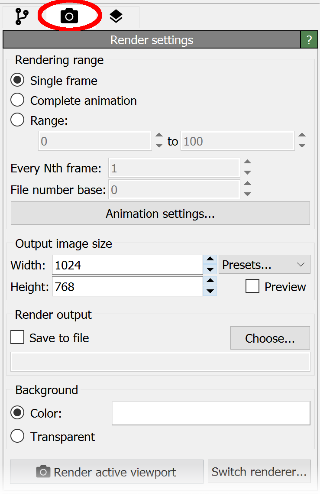

Rendering
{kind=link}
After you have created a pipeline for data analysis and visualization, at some point you may want to produce images or a movie for publications or presentations. For this, go to the Rendering tab in the command panel as shown on the right.
The Render active viewport button launches the image rendering process for the active viewport (marked by a yellow border). OVITO will open a separate window to show the generated image, which can be saved to disk or copied to the clipboard from there.
The Render settings panel controls various settings such as the resolution of the generated image and its background color. You can set a filename in the render settings panel in advance under which the rendered picture or movie will be saved. Or you can manually save the picture later on once rendering is complete and you are happy with the result.
OVITO Pro comes with several rendering engines to choose from, which differ in terms of speed, visual quality, and memory requirements. The default OpenGL renderer is the fastest one and produces pictures that are more or less identical to what you see in the interactive viewports. The Tachyon and OSPRay rendering engines, on the other hand, are software-based ray tracing engines, which are able to generate high-quality visualizations that include shadows, ambient occlusion shading, and depth of field effects. The VisRTX renderer offers similar capabilities using hardware-accelerated ray tracing. See the reference section to learn more about the rendering capabilities of OVITO.
OpenGL renderer: |
Tachyon renderer: pro |
OSPRay renderer: pro |
VisRTX renderer: pro |
|---|---|---|---|
{kind=link}
{kind=link}
{kind=link}
{kind=link}
Creating animations
OVITO can render a movie of the loaded simulation trajectory. To render an animation, select the Complete animation option in the Render settings panel and specify an output filename for the video. OVITO’s built-in video encoder supports standard formats such as AVI and MPEG. The frame rate for the output video is set in the animation settings dialog. Alternatively, you can produce a series of image files, one per frame, and combine them later into a movie using an external video encoding tool.